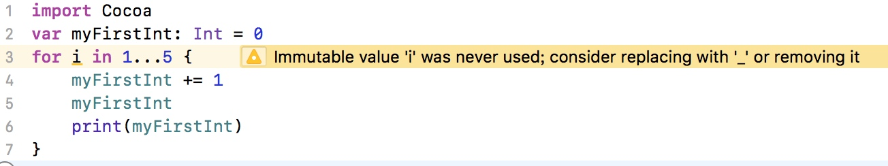

循环对于重复性的任务比较有用。它能重复执行一段代码，可以是重复指定的次数，也可以
是在满足指定条件的情况下重复运行。使用循环可以避免出现冗长、重复的代码。
for-in 循环
import Cocoa
var myFirstInt: Int = 0
for i in 1...5 {
myFirstInt += 1
myFirstInt
print(myFirstInt)
}
首先声明一个为Int类型的myFirstInt变量，初始化为0，然后创建了一个for-in循环
for 关键字就表示这是个循环，接着声明了一个迭代器(interator)i, 1...5表示是区间[1,5],循环的次数就是区间的个数，第一次循环i的值为1，第二次循环i的值为2以此类推。
{}内的代码就是每次循环都会被执行的。每一次循环myFirstInt都会增加1，然后被打印出来。
当你声明了i但是没有使用它的时候，编译器会给你一个警告⚠️

通过使用_可以忽略迭代器，这样可以不用显式地使用它。
import Cocoa
var myFirstInt: Int = 0
for _ in 1...5 {
myFirstInt += 1
myFirstInt
print(myFirstInt)
}
for-in循环中也可以使用where子句
比如输出1到100内能被3整除的数，一般情况下我们会这么写
import Cocoa
for i in 1...100{
if i % 3 == 0{
print(i)
}
}
Swift的where子句还可以这样写
import Cocoa
for i in 1...100 where i % 3==0{
print(i)
}
另外上面的代码中，i并没有显式的声明为Int类型，但是它可以根据上下文来推断i是Int类型。
while 循环
只要条件为真，while循环会一直执行循环体内的代码。
import Cocoa
var myFirstInt: Int = 0
var i = 1
while i < 6 {
myFirstInt += 1
print(myFirstInt)
i += 1
}
这个就不需要过多解释吧
repeat-while 循环
Swift还支持一种叫作repeat-while循环的while循环。repeat-while循环在其他语言中被称作do-while循环。while循环和repeat-while循环的区别在于何时计算条件。while循环在进入循环之前计算条件，这意味着while循环可能永远不会执行，因为其条件可能在第一次计算的时候就为假。repeat-while循环则至少执行一次，然后才计算条件。repeat-while循环的语法说明了这个区别。
import Cocoa
var myFirstInt: Int = 0
var i = 1
repeat{
// 至少执行一次
myFirstInt += 1
print(myFirstInt)
i += 1
}while i < 6
控制转移语句
在循环语境中，你可以控制执行回到循环开头还是离开循环。
continue
跳出本次循环
以上面的1到100能被3整除数举个类似的例子，输出1到100中不输出能被3整除的。
import Cocoa
for i in 1...100{
if i % 3 == 0{
continue
}
print(i)
}
结果是输出不包含能被3整除的数，在代码中，for循环的时候先会if判断i是否能被3整除，如果不能整除，那么就会输出i，如果能被整除，则执行continue跳出本次循环，进行下一次循环，i被赋值为新值再一次做循环操作。
break
退出循环
继续上面的代码，我们改为遇到能被3整除的数就不再输出。
import Cocoa
for i in 1...100{
if i % 3 == 0{
break
}
print(i)
}
结果输出
1
2
和上面对比 就是continue变成break，当循环中遇到了break，那么就会退出最近的一个循环。